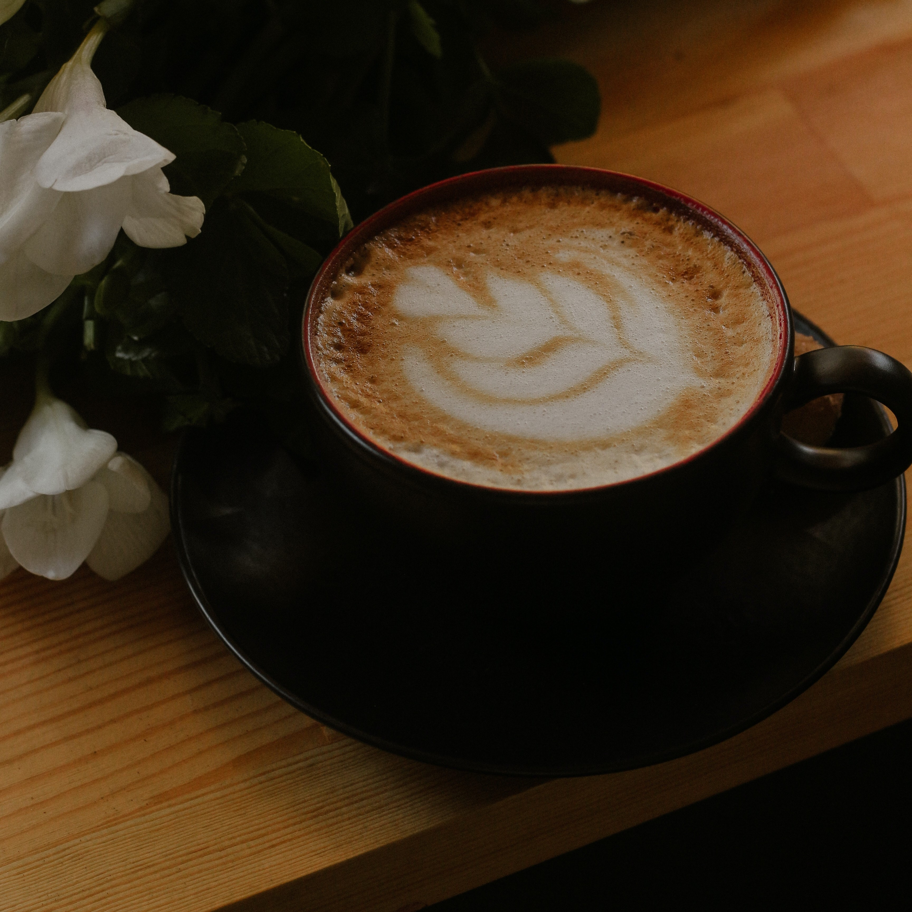
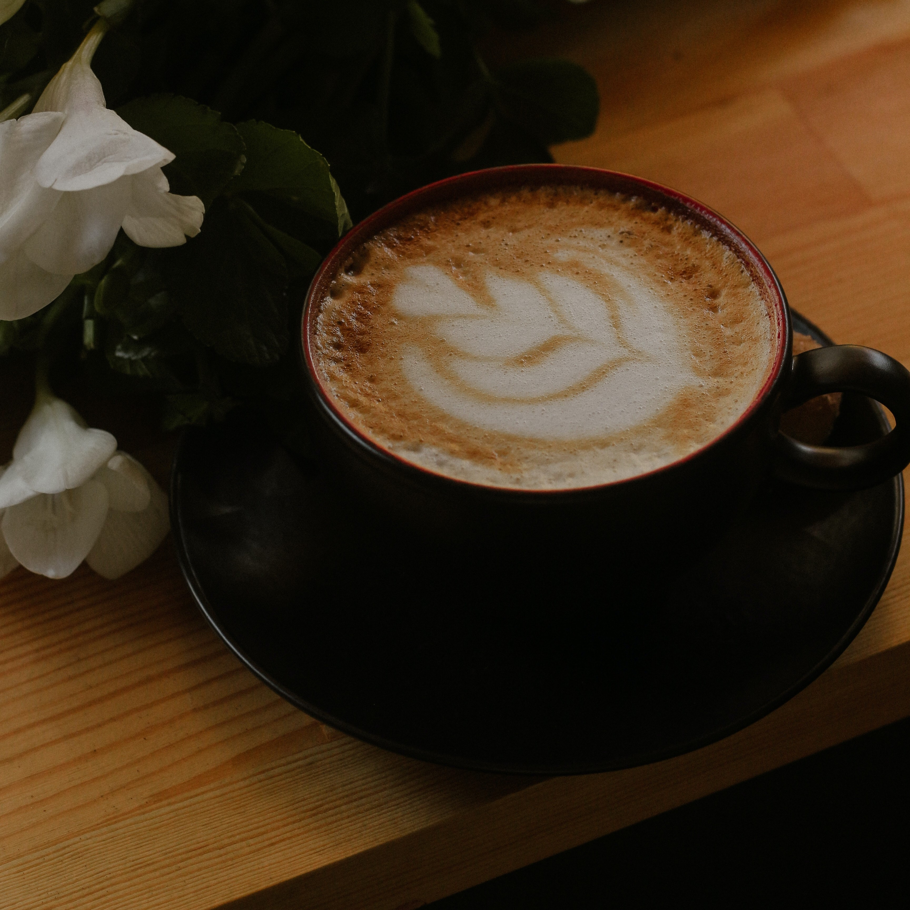

Nestled in the heart of the town, Dragons & Drakes is more than just a coffee shop; it's a haven for adventurers, dreamers, and coffee enthusiasts alike. Crafted with love and care by retired adventurer Ferran Telfer, Dragons & Drakes embodies soothing calm after a lifetime of adventure.
Step into our cozy sanctuary, After discovering the tales of distant lands and mythical creatures, we invite you to unwind and indulge in a moment of peace. The scent of freshly brewed coffee mingles with the aroma of ancient scrolls, time slows down, and the worries of the world outside fade away.
At Dragons & Drakes, we believe in the magic of discovery. From the delicate notes of our enchanted brews to the sharp tang of Adrali inspired teas, our menu is a journey through flavors that will transport you to realms unknown and bring you back to the warm embrace of home.
Dragons & Drakes is more than just a coffee shop, it’s a welcoming space where friends and family gather, and stories are shared. Our friendly and knowledgablestaff, many of whom are fellow retired adventurers and family are always eager to guide you through our menu and help you find your perfect brew. Whether you're a seasoned explorer or a first-time visitor, you'll find a warm and welcoming atmosphere where you can relax, recharge, and share your own tales of adventure.
So come join us at Dragons and Drakes and let the gentle rhythm of life embrace you. Experience the magic of a perfectly brewed cup of coffee, and the feeling of being at home, even when you're away. Take a seat, relax, and let the aroma of freshly brewed coffee wrap around you like a well worn cloak.

 
